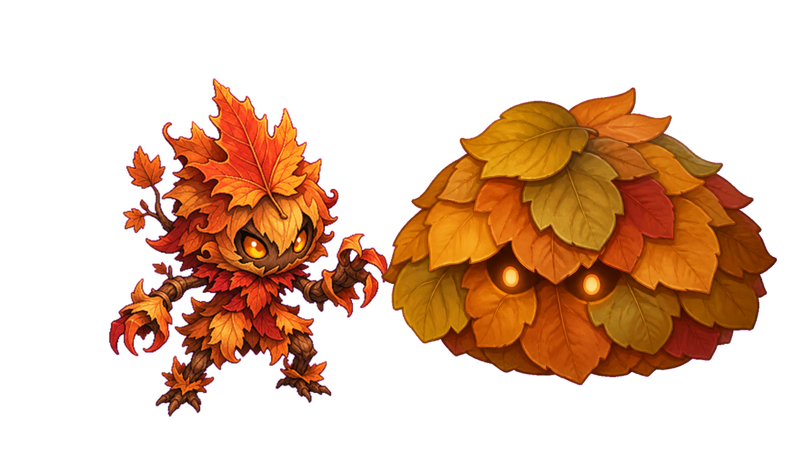

莉娜治愈、智慧、守护 · Healing and protection

IP 组合 · 公开版本 · 未公布世界
第三学院 OPC 的产品组合从学术喵开始：一个拥有完整视觉资产、在线多人版本、内容扩展协议和宣发增长空间的校园幻想动作 RPG IP。

首个公开产品 First Public Product
学术喵是一个围绕学习、成长与守护展开的校园幻想 IP。首款游戏讲述学术喵们挺身守护校园，在日常学习与幻想秩序之间发现伙伴、知识和战斗使命的故事。
公开角色 Public Characters
角色群像提供了清晰的情感入口，也为后续玩法、漫画、视频宣发和周边化留下空间。


宣传视频 Promo Videos
莉娜与知夏的视频素材呈现了角色气质、动作表达和世界观辨识度，为公开展示、合作沟通、预告片剪辑和后续角色内容提供成熟素材。
视觉资产 Visual Assets
主视觉、角色立绘、精灵表、地图、怪物和 UI 素材已经形成清晰的校园幻想调性，支撑后续版本、短视频宣发和合作内容扩展。

怪物视觉 Enemy Design 秋日废墟与落叶小怪构成校园幻想的敌人层级，为关卡、Boss 和活动内容留下扩展空间。未公布产品组合 Undisclosed Portfolio
无色轮廓保留了公司产品组合的选择权，展示管线储备，但不会过早锁定公众期待或视觉方向。

未来概念会根据受众兴趣、制作成本、宣发潜力和合作机会逐步进入产品管线。
协作者可以通过内容、测试、审阅、宣发和渠道资源进入流程；投资人和顾问可以观察 IP 资产、生产效率和增长数据的持续积累。